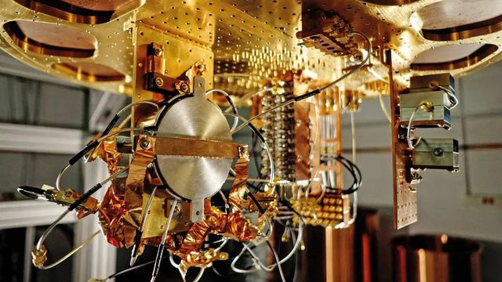
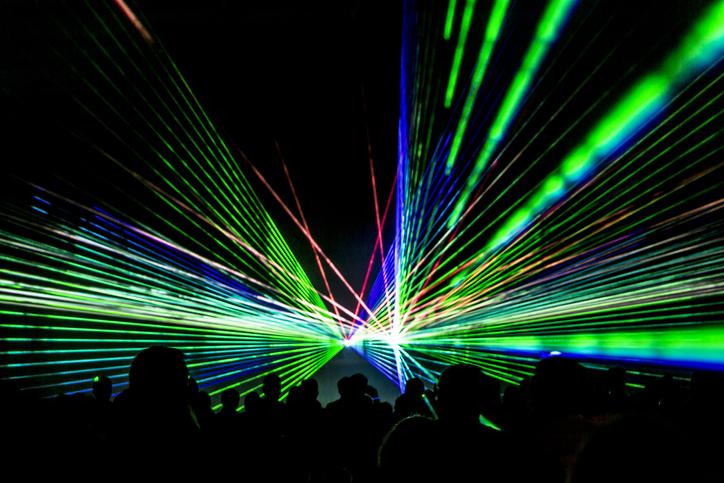
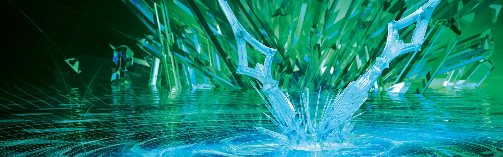
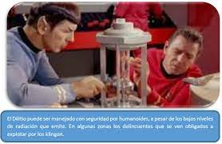
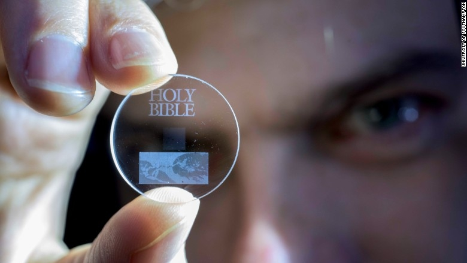
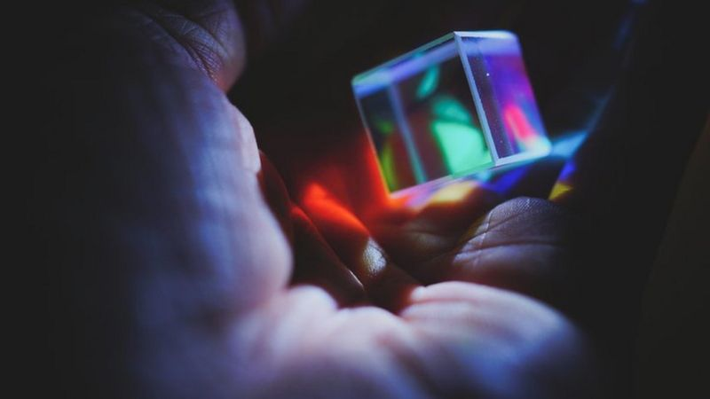

QUÉ ES UN CRISTAL DE TIEMPO?
Ante todo un cristal de tiempo es,sencillamente, un cristal, por lo que es una buena idea que comencemos repasando qué es este objeto desde un punto de vista fisicoquímico. Podemos definir un cristal como una estructura de la materia cuyos átomos se disponen de una manera homogénea y ordenada, dando forma a un patrón que se repite periódicamente a lo largo del espacio.
Son muy abundantes en la naturaleza; de hecho, las piedras preciosas, el azúcar y la sal son cristales, entre muchos otros objetos que se originan de una forma completamente natural. Sin embargo, desde un punto de vista fisicoquímico el vidrio no es un cristal debido a que, en realidad, es un objeto con una estructura atómica amorfa.
Lo imposible es ahora posible
Lo que sí es cierto es que, por ahora, los científicos que no han participado en los estudios pero lo han leído se muestran asombrados de los resultados, que confirman una idea propuesta por el ganador del premio Nobel de física Frank Wilczek, que en 2012 apuntó a la posible existencia de estos cristales del tiempo, que sufrirían un movimiento periódico para volver a su estado original en intervalos exactos de tiempo.
Suena como un reloj pero en realidad no tiene nada que ver. Un reloj consume y disipa energía, pero estos cristales del tiempo no consumen energía ni la disipan. Sencillamente, las partículas cuánticas se mueven de forma independiente, cíclica y constante, cambiando de posición y estado de forma ordenada para volver a su posición original. Y sí, también suena imposible cada vez que lo lees. De hecho, un experimento dijo probar que la idea de Wilczek era absurda como todas los mecanismos de movimiento perpétuo. Pero ahora, dos equipos diferentes no sólo dicen que es posible sino que además lo han logrado hacer. Uso desconocido, por ahora Y aunque todavía no tienen claro para qué van a servir, sí tienen claras dos cosas. La primera es que, como dice Roderich Moessner, co-autor de uno de los estudios y director del Instituto Max Planck para la física de sistemas complejo en Dresden, alemania, ‘las consecuencias son asombrosas porque los cristales del tiempo eluden la segunda ley de la termodinámica.
La segunda, como apunta el propio Moessner, es que, aunque todavía no sabemos qué uso exacto se le puede dar a estos cristales, “algo tan estable como esto es inusual, y las cosas especiales siempre son útiles”. No le falta razón. La mayoría de los grandes inventos que han cambiado el mundo de forma radical — desde el telégrafo al GPS al láser o la energía nuclear — vinieron de descubrimientos de la física extraordinarios sin una obvia aplicación útil. Primero habrá que ver si estos cristales del tiempo son, efectivamente, viables y reales. Si se confirman, las maravillas tecnológicas seguro que vendrán después. Y una última cosa: de confirmarse el invento de Google y compañía, esta también sería la primera aplicación práctica de un computador cuántico en algo que ninguna otra máquina en el planeta hubiera podido hacer, confirmando también la preddicción del físico Richard Feynman que, como apunta Quanta Magazine, ya escribió en su día que estos ordenadores serían capaces de "simular partículos de cualquier sistema quántico imaginable".

CARACTERISTICAS
| Patrones que se repiten |
Romper la cimetria |
¿Para que pueden servir? |
|
| Primero debemos tener claro qué es un cristal.
En física, un cristal se define como un objeto cuyos átomos están ordenados de tal manera que crean un patrón que se repite.
En un líquido, por ejemplo, las moléculas se distribuyen de manera simétrica, como un enjambre uniforme.
En un cristal, en cambio, las moléculas se agrupan formando redes y estructuras que van creando una secuencia.
Por eso, Wilczek dice que "los cristales son las sustancias más organizadas de la naturaleza".
Si miras bajo un microscopio, podrás ver, por ejemplo, las estructuras de los cristales de sal o de la nieve.Memoria cuántica: el experimento científico que logró atrapar y transportar partículas de luz (y por qué es importante para el futuro de la tecnología)Entonces, si ya sabemos que un cristal está formado por patrones que se repiten en el espacio, surge la pregunta con la que el asunto se vuelve más interesante: ¿es posible crear un cristal cuyos patrones no se repitan cada cierta distancia, sino cada cierto tiempo? |
Como dijimos antes, un líquido es simétrico, es decir, sus propiedades son iguales en cualquiera de sus puntos.
Si de alguna manera se logra romper esa simetría, el líquido deja de ser líquido y se convierte, por ejemplo, en un cristal.
Piensa por ejemplo en el agua. En su estado líquido es simétrica, pero al congelarse sus partículas se convierten en cristales que rompen esa simetría, creando un patrón que se repite a lo largo de su estructura.
En su investigación, Hurtado y su equipo querían romper la simetría de un fluido, pero no a lo largo de su espacio, sino del tiempo.
Para ello, en una súpercomputadora simularon aplicarle al fluido algo llamado "campo externo de empaquetamiento".
Ese campo lo que hace es empujar algunas de las partículas del fluido y frenar a otras, con lo cual se produce una acumulación de partículas que a su vez produce una onda que viaja de manera constante por el sistema.
El resultado fue que el paquete de partículas comenzó a viajar incesantemente por el sistema. |
El trabajo de Hurtado fue teórico, pero ya no a nivel cuántico, sino en un sistema clásico, es decir, macroscópico.
Samuli Autti, investigador del departamento de física de la Universidad de Lancaster en Reino Unido, quien no estuvo involucrado en esta investigación, le dice a BBC Mundo que el trabajo de Hurtado "es un gran paso" para comprender mejor los cristales del tiempo que en 2012 comenzó a sugerir Wilczek.
Los cristales del tiempo son un área de estudio que está en sus inicios, pero desde ya permiten soñar con impresionantes usos en la ciencia y la tecnología.
|
Cristales de tiempo y metáfora de la discoteca
En una red ordenada de átomos como la existente en un material con estructura cristalina, como un metal, los átomos se organizan a través de sus interacciones.
Entonces hay una cierta regularidad. Hay un patrón que se va repitiendo espacialmente. Aquí es donde entra el concepto de cristales de tiempo, porque así como se puede encontrar una especie de patrón en el espacio, se puede encontrar también en el tiempo.
“En la estructura cristalina de ciertos materiales los átomos se organizan en forma de malla, en la cual se encuentra un átomo a cada cierta distancia, que es la llamada distancia atómica. Y esto se distribuye regularmente en el espacio. Ahora hay que imaginar que, en lugar de tener una distribución espacial, se tiene una distribución temporal. Un ejemplo típico es un patrón de una nube atómica que cuando se excita forma lóbulos. Cuando se hacen fotografías de éstos se ve que van cambiando, pero cada cierto tiempo se encuentra el mismo patrón”, platica Poveda.
Es como si fuera un video en que después de un cierto periodo se encuentra la misma imagen. Y esto se repite muchas veces a lo largo de los minutos transcurridos. “También se le llama sistema estroboscópico, al cual se le asigna la idea de cristal de tiempo”.
Esto hace recordar a las lámparas estroboscópicas, fuentes luminosas que emiten destellos en sucesión rápida, muy utilizadas en lugares como discotecas, donde la frecuencia de los pulsos luminosos a veces coincide con el ritmo del baile de la gente y, por esta sincronía, pareciera que los movimientos ocurren en cámara lenta.
De esta manera se analiza o se entiende mejor el baile en fases a velocidad reducida, lo cual es parecido al efecto que se busca conseguir en el entendimiento de sistemas complejos como el cerebro a través de los cristales de tiempo.
Este catedrático enfatiza que los cristales de tiempo no son un tipo de materia, sino más bien un concepto que posibilita su mejor entendimiento.
“No hay un material particular de cristales de tiempo. En la naturaleza no hay cristales de tiempo, sino que es un comportamiento colectivo de un sistema”, aclara.
Poveda cuenta que en el LMU él está desarrollando sistemas análogos a los cristales de tiempo, pero que aún no ha logrado generarlos bajo condiciones completamente controladas. Sin embargo, sigue intentando alcanzar en el área de la física el mismo nivel de mérito con el que hace casi 200 años el egiptólogo galo Champollion inmortalizó su apellido en el campo de la arqueología.

Científicos logran crear ‘cristales de tiempo’, un nuevo estado de la materia
El hallazgo es especialmente relevante, explicaron los investigadores, en campos como la metrología, para el diseño de relojes más precisos, o en computación cuántica, donde los cristales de tiempo pueden utilizarse para simular estados fundamentales o diseñar ordenadores cuánticos más robustos.
En los cristales de tiempo -cuya existencia se sugirió por primera vez en 2012-, los átomos repiten un patrón a través de la cuarta dimensión, el tiempo, a diferencia de los cristales normales (como un diamante), que tienen átomos dispuestos en una estructura espacial repetitiva, ha informado la Universidad de Granada. Estos nuevos cristales temporales se caracterizan por realizar un movimiento periódico en el tiempo.
Los investigadores, entre ellos Rubén Hurtado Gutiérrez, Carlos Pérez Espigares y Pablo Hurtado, del departamento de Electromagnetismo y Física de la Materia de la Universidad de Granada, demuestran en este estudio que ciertas transiciones de fase dinámicas que aparecen en las fluctuaciones raras de muchos sistemas físicos rompen espontáneamente la simetría de traslación en el tiempo.
Los científicos han propuesto un nuevo camino para usar este fenómeno natural para crear cristales de tiempo.
Para realizar las simulaciones de este trabajo los científicos han empleado el superordenador Proteus, perteneciente al Instituto Carlos I de Física Teórica y Computacional de la Universidad de Granada, considerado uno de los superordenadores de cálculo científico general más potentes de España.
El investigador Pablo Hurtado explicó que “la relatividad de Einstein nos enseñó que el tiempo es de alguna manera flexible, y que está inextricablemente unido al espacio en un todo que conocemos como espaciotiempo”.
Esa unificación es, sin embargo parcial, ya que el tiempo sigue siendo especial en muchos sentidos, indica el científico, que pone como ejemplo que “podemos movernos adelante y atrás entre dos puntos cualesquiera en el espacio, pero sin embargo no podemos visitar el pasado; el tiempo tiene una flecha, mientras que el espacio no tiene tal flecha”.
En su estudio, los científicos proponen una ruta inexplorada hasta ahora para construir cristales de tiempo, basada en la observación reciente de ruptura espontánea de la simetría de traslación temporal en las fluctuaciones de sistemas de muchas partículas.
Los resultados, dijeron los investigadores, son importantes porque abren un camino inexplorado para entender mejor el tiempo y sus simetrías, mientras que, a nivel práctico, enseñan nuevas formas de crear cristales de tiempo.

EN EL CINE
Star Trek
En la serie original, los cristales de dilitio se formaban únicamente de manera natural, convirtiendo su búsqueda en el argumento de varias historias. En Star Trek IV: Misión: salvar la Tierra, Spock descubrió un método para recristalizar el dilitio que permitió a la tripulación regenerar los cristales del ave de presa klingon capturado. El método consistía en usar reactores de fisión del siglo XX para reunir fotones de alta energía que regeneraban los cristales

Superman y los Cristales
Microsoft presentó ayer en su conferencia Ignite 2019 un sorprendente método de almacenamiento de datos. La compañía de Bill Gates ha trabajado de manera conjunta con Warner Bros. para almacenar y recuperar la totalidad de la película de Superman de 1978 en un fragmento de cristal de 75 por 75 por 2 milímetros de espesor. La placa cristalina es “aproximadamente del tamaño de un posavasos para bebidas”, según explica Microsoft en un comunicado oficial.

ARTICULOS
Cristales en el Tiempo
En 2012, el físico teórico Frank Wilczek propuso un polémico concepto para describir un nuevo estado de la materia que desafiaba las leyes de la física. "Cristales de tiempo", los llamó Wilczek, quien en 2004 ganó el Premio Nobel de física.
Al principio, varios de sus colegas dijeron que era simplemente imposible crear cristales de tiempo, pero luego, varias investigaciones, incluyendo un reciente estudio de la Universidad de Granada en España, han comenzado a mostrar que quizás sí es posible crear este extraño material.
Producir estos cristales nos permitiría medir el tiempo y la distancias con una "precisión exquisita", como escribió Wilczek en un artículo en la revista Scientific American.
Para leer el articulo completo entre aca

LIBROS
Para mas informacion de la revista
Si te interesa la revista,Materiales exoticos